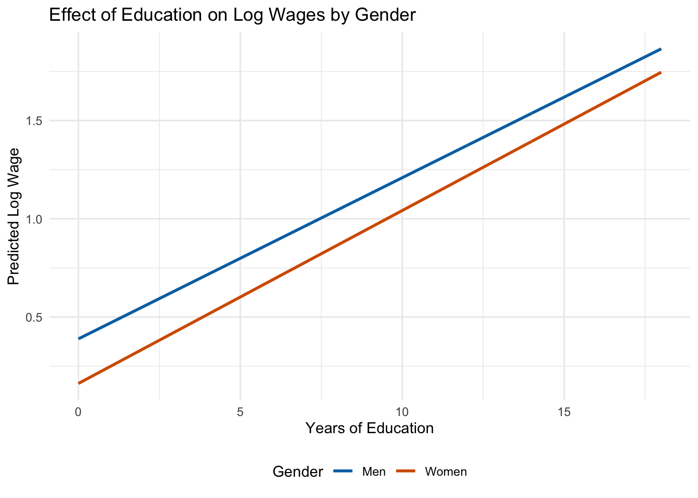

In the previous chapter, we saw how dummy variables allow different groups to have different intercepts—the regression lines for different groups are parallel but shifted up or down. But what if the effect of a variable differs across groups? What if the returns to education are higher for men than for women, or the effect of experience on wages depends on whether someone has a college degree?
Interaction terms allow us to model these situations. When we include an interaction between two variables, we allow the effect of one variable to depend on the value of another.
This model assumes that the effect of education on wages (\(\beta_2\)) is the same for men and women. The only difference is the intercept—women’s wage line is shifted down by \(\beta_1\).
But what if education has different effects for men and women? Perhaps discrimination means women receive lower returns to their education, or perhaps women are overrepresented in fields where education is particularly valuable. To test this, we need to allow the slope on education to differ by gender.
This is exactly what interaction terms do.
8.2 Interactions Between Two Dummy Variables
Let’s start with the simplest case: interacting two dummy variables. Suppose we want to understand how being female and being married jointly affect wages.
We create an interaction term by multiplying the two dummy variables:
The interaction term \(female \times married\) equals 1 only for married women and 0 for everyone else.
wage_data <- wooldridge::wage1 |>mutate(female_married = female * married)lm1 <-lm(log(wage) ~ female + married + female_married, data = wage_data)summary(lm1)
Call:
lm(formula = log(wage) ~ female + married + female_married, data = wage_data)
Residuals:
Min 1Q Median 3Q Max
-2.0240 -0.3245 -0.0800 0.3155 1.6849
Coefficients:
Estimate Std. Error t value Pr(>|t|)
(Intercept) 1.52081 0.05099 29.827 < 0.0000000000000002 ***
female -0.13164 0.06680 -1.971 0.0493 *
married 0.42669 0.06155 6.932 0.0000000000123 ***
female_married -0.37479 0.08571 -4.373 0.0000148080201 ***
---
Signif. codes: 0 '***' 0.001 '**' 0.01 '*' 0.05 '.' 0.1 ' ' 1
Residual standard error: 0.4728 on 522 degrees of freedom
Multiple R-squared: 0.2132, Adjusted R-squared: 0.2087
F-statistic: 47.15 on 3 and 522 DF, p-value: < 0.00000000000000022
8.2.1 Interpreting the Interaction
To understand what each coefficient means, let’s work through the predicted wages for each group:
Group
female
married
female × married
Predicted ln(wage)
Unmarried men
0
0
0
\(\beta_0\)
Unmarried women
1
0
0
\(\beta_0 + \beta_1\)
Married men
0
1
0
\(\beta_0 + \beta_2\)
Married women
1
1
1
\(\beta_0 + \beta_1 + \beta_2 + \beta_3\)
From our estimates:
Unmarried men (baseline): \(\ln(wage) = 1.57\)
Unmarried women: The coefficient on female (\(\hat{\beta}_1 \approx -0.13\)) tells us unmarried women earn about 13% less than unmarried men.
Married men: The coefficient on married (\(\hat{\beta}_2 \approx 0.42\)) tells us married men earn about 42% more than unmarried men—a large “marriage premium.”
Married women: We need to add all applicable coefficients: \(-0.13 + 0.42 + (-0.38) = -0.09\), so married women earn about 9% less than unmarried men.
The Interaction Effect
The coefficient on the interaction term (\(\hat{\beta}_3 \approx -0.38\)) tells us that the marriage premium is different for women than for men. While married men earn 42% more than unmarried men, the marriage “premium” for women is only \(0.42 + (-0.38) = 0.04\), or about 4%—much smaller.
Equivalently, the gender wage gap is larger for married workers than for unmarried workers.
8.3 Interactions Between Dummies and Continuous Variables
Perhaps more powerful is interacting a dummy variable with a continuous variable. This allows the slope—not just the intercept—to differ across groups.
Suppose we want to test whether men and women have different returns to education:
Men start with a higher intercept (0.389 vs 0.162)
Women have a slightly higher return to education (8.8% vs 8.2% per year)
The interaction coefficient (\(\hat{\beta}_3 \approx 0.006\)) is not statistically significant here, suggesting we cannot reject that men and women have the same returns to education. But the approach illustrates how interactions allow different slopes.
Figure 8.1: With an interaction term, men and women can have different slopes (returns to education), not just different intercepts.

Dummy Variables vs. Interactions: A Summary
Dummy variable alone: Different intercepts, same slopes (parallel lines)
Interaction with continuous variable: Different intercepts AND different slopes
8.4 Computing Effects with Interactions
When interactions are present, computing the effect of a variable requires care. The effect of one variable depends on the value of the other variable in the interaction.
The effect of education on wages is: \[
\frac{\partial \ln(wage)}{\partial educ} = \beta_2 + \beta_3(female)
\]
For men (\(female = 0\)): Effect = \(\beta_2 = 0.082\) (8.2% per year)
For women (\(female = 1\)): Effect = \(\beta_2 + \beta_3 = 0.082 + 0.006 = 0.088\) (8.8% per year)
Similarly, the effect of being female depends on education level: \[
\frac{\partial \ln(wage)}{\partial female} = \beta_1 + \beta_3(educ)
\]
At 12 years of education: Effect = \(-0.227 + 0.006(12) = -0.155\) (-15.5%)
At 16 years of education: Effect = \(-0.227 + 0.006(16) = -0.131\) (-13.1%)
The gender wage gap narrows as education increases (though the interaction isn’t statistically significant in this example).
8.5 Interactions Between Two Continuous Variables
We can also interact two continuous variables. For example, perhaps the effect of experience on wages depends on education level—more educated workers might have steeper experience-wage profiles because they’re in careers with more room for advancement.
Call:
lm(formula = log(wage) ~ educ + exper + educ_exper, data = wage_data)
Residuals:
Min 1Q Median 3Q Max
-2.05543 -0.29549 -0.05335 0.31047 1.44788
Coefficients:
Estimate Std. Error t value Pr(>|t|)
(Intercept) 0.1532232 0.1673326 0.916 0.3603
educ 0.1030365 0.0127368 8.090 0.00000000000000422 ***
exper 0.0132641 0.0060374 2.197 0.0285 *
educ_exper -0.0002473 0.0004945 -0.500 0.6172
---
Signif. codes: 0 '***' 0.001 '**' 0.01 '*' 0.05 '.' 0.1 ' ' 1
Residual standard error: 0.4617 on 522 degrees of freedom
Multiple R-squared: 0.2497, Adjusted R-squared: 0.2454
F-statistic: 57.91 on 3 and 522 DF, p-value: < 0.00000000000000022
The interaction coefficient (\(\hat{\beta}_3 \approx 0.0003\)) is small but positive and marginally significant. This suggests that the returns to experience are slightly higher for more educated workers.
The effect of experience is: \[
\frac{\partial \ln(wage)}{\partial exper} = \beta_2 + \beta_3(educ)
\]
For someone with 12 years of education: \(0.019 + 0.0003(12) = 0.023\) (2.3% per year)
For someone with 16 years of education: \(0.019 + 0.0003(16) = 0.024\) (2.4% per year)
8.6 Application: Decomposing the Gender Wage Gap
Economists have long sought to understand why women earn less than men on average. A classic approach uses regression with interactions to decompose the wage gap into:
Explained differences: Gaps due to differences in education, experience, occupation, etc.
Unexplained differences: Gaps that remain after controlling for observable characteristics (potentially reflecting discrimination)
The human capital variables (education, experience) capture differences in worker productivity
The occupation dummies capture sorting into different types of jobs
The coefficient \(\beta_1\) on female represents the unexplained gap—the wage difference that remains after accounting for these factors
Research by Blau and Kahn (2017) uses this approach with rich panel data. They find that while the raw gender wage gap has narrowed considerably since 1980, a substantial unexplained gap remains. Human capital differences explain less of the gap over time (as women have caught up in education and experience), but occupational and industry segregation continues to be important.
8.7 Best Practices for Using Interactions
8.7.1 Always Include Main Effects
When including an interaction term, always include the main effects too:
Correct:\[
y = \beta_0 + \beta_1(A) + \beta_2(B) + \beta_3(A \times B)
\]
Incorrect:\[
y = \beta_0 + \beta_3(A \times B)
\]
Omitting main effects forces the interaction to capture both the main effects and the interaction, leading to misleading coefficients.
8.7.2 Center Continuous Variables
When interacting continuous variables, centering them (subtracting the mean) can make coefficients more interpretable. After centering, the main effect coefficient gives the effect at the mean of the other variable, rather than at zero.
8.7.3 Test Whether Interactions Are Needed
Not every model needs interactions. Test whether the interaction coefficient is statistically significant before interpreting it substantively. You can also use F-tests to jointly test multiple interaction terms.
8.8 Summary
Interaction terms extend the flexibility of regression models by allowing the effect of one variable to depend on another.
Interactions between dummy variables allow us to estimate separate effects for groups defined by multiple categories. The interaction coefficient captures the additional effect of belonging to both categories beyond what we’d expect from adding the individual effects.
Interactions between dummies and continuous variables allow different slopes for different groups. Without interactions, a dummy variable only shifts the intercept (parallel lines). With interactions, each group can have its own slope.
Interactions between continuous variables allow the marginal effect of one variable to vary with the level of another. This is useful when economic theory suggests complementarities or diminishing returns.
When interactions are present, interpreting coefficients requires care. The effect of a variable involved in an interaction depends on the value of the other variable(s) in the interaction. Always compute effects at meaningful values (like means or specific policy-relevant points).
8.9 Check Your Understanding
For each question below, select the best answer from the dropdown menu.
Show Explanation
The interaction coefficient β₃ captures how the effect of education differs between groups. It tells us how much more (or less) each year of education affects wages for women compared to men.
For women (female = 1), the effect of education is the derivative with respect to educ: β₂ + β₃(female) = β₂ + β₃(1) = β₂ + β₃. The interaction term adds to (or subtracts from) the baseline effect.
For married women, female = 1, married = 1, and female × married = 1. The predicted log wage is: 1.5 + (-0.20)(1) + (0.30)(1) + (-0.25)(1) = 1.5 - 0.20 + 0.30 - 0.25 = 1.35.
The marriage premium for women is β₂ + β₃ = 0.30 + (-0.25) = 0.05. The interaction term reduces the marriage premium for women compared to men (who have a premium of just β₂ = 0.30).
When we include an interaction A × B without the main effects A and B, the interaction term is forced to capture all variation associated with both A and B, not just their interaction. This leads to coefficients that are difficult to interpret and often misleading.
Taking the partial derivative of y with respect to x₁, treating x₂ as constant: ∂y/∂x₁ = β₁ + β₃x₂. The effect of x₁ depends on the level of x₂—this is the defining feature of an interaction.
Bailey, Michael A. 2020. Real Econometrics: The Right Tools to Answer Important Questions. Oxford University Press.
Wooldridge, Jeffrey M. 2019. Introductory Econometrics: A Modern Approach. 7th ed. Cengage Learning.